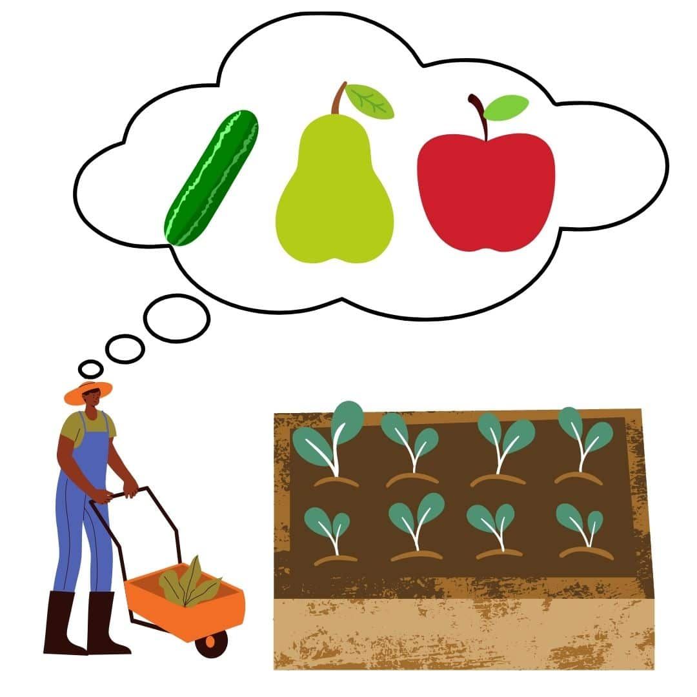

What Is json:,omitempty In Go?
Learn how and when to use them!


Introduction
Structs are Go’s way of creating our own classes or piecing together information in one unit. No doubt, you would have chanced upon this `json:,omitempty` line before. In this article, I will share more about what this tag is and how we can use it.
Content Page
Omitempty tag
You must be curious what is this `json:,omitempty` annotation that is found after a struct field declaration like this
type fruit struct {
Name string
Length int `json:,omitempty`
}
`json:,omitempty` is a json tag for a field in a struct. When unmarshalling json data into a struct, if that particular field is empty, the field would be ignored. Without the omitempty tag, a default value will be used.
In the example above, without the omitempty tag, the length field would be populated with the int 0. If the type of the empty field is string, “” (empty string) would be the default value. Similarly, the default value of a boolean type is false and nil for pointer, interface, slice and map.

farmer who wishes to document his inventory
Let us continue with the example to better elaborate on the omitempty tag and the use cases. Take for instance I am a fruit farmer and I would like to document the different types of fruits in my inventory. I would use this code
package main
import (
“log”
"encoding/json"
"fmt"
)
type fruit struct{
Name string `json: "name"`
Length int `json: "length,omitempty”`
}
func main() {
cucumber := fruit {
Name: "cucumber",
Length: 10,
}
data, err := json.Marshal(&cucumber)
if err != nil{
log.Println("unable to marshal data")
}
fmt.Println(string(data))
}
In this case, the output would be {“name”: “cucumber”, “length”: 10}. A brief explanation of the code, from the json package, I marshal the cucumber variable into a json body and store it in the variable data as type slice of byte. In order to see the human-readable form of data, I need to convert the slice of byte into string using the string() function. I also did an error check and logged the error if any. It is always good practice to log errors to quickly pinpoint where the code might have faults.
Back to the example! Unfortunately, I lost my ruler and can no longer measure the length of my fruits. I decided to leave the length field empty. I continue to document my fruits with
pear := fruit {
Name: "pear",
}
And the output is {“name”: “pear”}. Notice how the length field is absent. In the event that I left out the omitempty tag, the output would instead be {“name”: “pear”, “length”: 0}. It doesn’t make sense that a pear would be 0cm and that might mess up subsequent code that makes use of the length of the fruits.
This simple example is a reflection of the nature of data that is sent across the web, there are a variety of ways data can come in and at times not all the fields will be populated. As such, if I know that the field may not always be filled, with the help of the omitempty tag, I can have cleaner data.
In addition to the omitempty tag, an alternative tag to use is “-” as such
type fruit struct {
Name string
Length int `json:,“-”`
}
It does the same function as the omitempty tag, which is to exclude marshalling or unmarshalling that specific field.
Special Case
In some instances, the omitempty tag will not work, like in the case of an embedded struct. Returning back the fruit farmer example
type colour struct{
Red int
Blue int
Green int
}
type fruit struct{
Name string `json: "name"`
Length int `json: "length,omitempty”`
FruitColour colour `json: "fruitColour,omitempty”`
}
func main() {
apple := fruit {
Name: "apple",
}
I decided that in the future I want to document the colours of the fruits but I will leave them blank for now. In the fruit struct, I added a new field called “FruitColour”, which is of a customised type “colour”, that is based on the RGB colour system. The output in this case for apple would be {“Name”: “apple”, “FruitColour”: {“red”: 0, “blue”: 0, “green”: 0} }. This is not what we expected as the FruitColour field should be empty.
Well, this is because in Go, the embedded struct does not have an empty value. As such, to overcome this problem, we need to change the type of FruitColour from colour to *colour (pointer to a colour instance)
type fruit struct{
Name string `json: “name”`
Length int `json: “length,omitempty”`
FruitColour *colour `json: “fruitColour,omitempty”`
}
Yes, just a simple asterisk will fix the problem and the output is back to what we want, {“name”: “apple”}.
What are tags
different types of json tags
Taking a step back to see a better overview, we can explore the use of tags in general and their use cases. Struct tags control how data from databases or HTTP requests are assigned to the field of the struct.
Much like the omitempty tags, struct tags are enclosed in backticks ` `, not single or double inverted commas. By convention, the tag is a key:”value” pair as such. The key is the package that the value is used for. In this case
Name string `json: "name" xml:“name,omitempty”`
The xml key refers to the encoding/xml package while json refers to the encoding/json package. To pass more than 1 tag, just separate the key-value pairs with a space. To pass more than 1 value, separate the values with commas.
These tags are not referenced in the main code or script. For example, if we want to access the name variable in the apple fruit instance, we would use the code
apple_name := apple.Name
And not
apple_name := apple.name
Pay attention to the capitalisation of the “name”. The fruit struct field has “Name” while the json tag uses “name”. Since the tags have no implication on our script, if we were to use the lowercase “name” an error occurs as there is no such value.
Examples of Tags
One popular example of tags is the json tag. JSON (JavaScript Object Notation) is a way for applications to interact and send data to each other. It is widely used in API (Application Programming Interface) communication.
One reason to use json tags is because of how we name the fields. In Go, for the field to be globally accessible throughout the code, we have to capitalise the first letter of the struct as seen in the example
type fruit struct{
Name string `json: "name"`
Length int `json: "length,omitempty”`
FruitColour colour `json: "fruitColour,omitempty”`
}
But if the application that we are engaging with sends us data where the key is not capitalised, there would be an unmarshalling error. The data is unable to find the fields to populate as it is case-sensitive. Thus, with the use of json struct tag metadata, it provides instructions to the json data and better facilitates its interaction with Go code.
Conclusion
Indeed struct tags are very useful and they are very common in Go code, especially for backend engineering where applications would require a ton of internal and external APIs to function. I hope this article was insightful and helped with your understanding of omitempty and tags. Stay Cool Cucumbers!